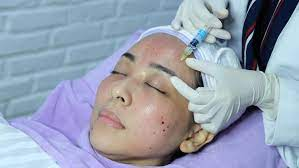
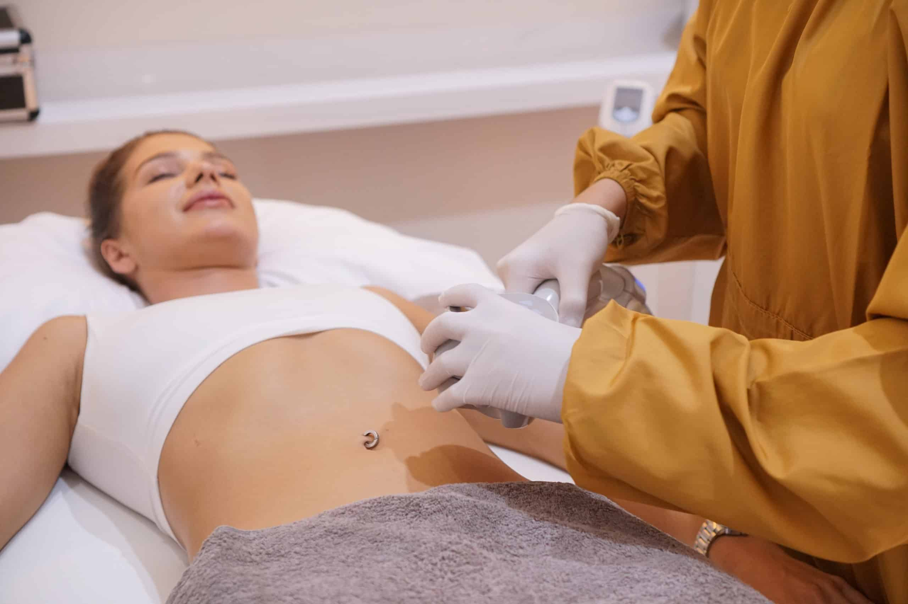
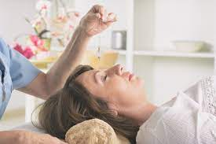

Facial Treatment
Silver facial. 99k
Platinum facial. 149kk
Diamond facial. 249kk
Gold facial. 349k

Cauter
Kondisi 1. 299k
Kondisi 2. 399k
Kondisi 3. 499k

Eye Treatment
EYE TREATMENT ONLY 69k
Chemical Peeling
Peeling acne. 249k
Peeling brightening. 249k
Peeling body. 199k
Peeling kaki. 299k

Infus Witening
INJECT (Suntik) Vitamin C + Kolagen Only. 69k
Infus Whitening Only. 299k
Infus Whitening + Kromoson Booster Only. 349k
Infus Whitening Chromosome Diamond Only. 899k

Laser
LASER BLACKDOLL. 499k
LASER FLEK Only. 499k
LASER TATTO REMOVAL Start. 399kk
LASER BIBIR. 299k
LASER KETIAK (Kanan Kiri). 129k
LASER PICO CELEBRITY Only. 699k

Skin Booster
Infus vitamin neurotropik dengan kandungan Vitamin B1,Vitamin B6, Vitamin B12,
yang penting untuk kesehatan fungsi saraf.Vitamin B1 bekerja dengan membantu memetabolisme
karbohidrat,Vitamin B6 membantu memetabolisme protein dan asam amino, VitaminB12 membantu
memelihara keutuhan jaringan saraf. 149k

SLIMMING Start
RF ( Radio Frequency ) Perbagian Only. 299k
RF ( Radio Frequency ) Full Body Only 649k

Terapi Nebulizer
Membantu untuk mengatasi dan mencegah gejala sesak nafas, serta Membantu
mengurangi peradangangan pada sistem peranafasan. 99k

Perawatan Luka Post Operasi
Membantu meningkatkan proses penyembuhan luka dan mengurangi rasa nyeri dengan cara merawat luka
serta memperbaiki asupan makanan tinggi protein dan vitamin. 119k

Perawatan Luka Diabetes
Kondisi 1. 249k
Kondisi 2. 299k
Kondisi 3. 349k

Hypnotherapy
Efektif untuk membantu mengurangi atau mengendalikan perasaan cemas, stres, dan sedih agar
menjadi lebih baik. 149k

Cek Darah Lengkap
Cek gula darah. 39k
Cek kolestrol. 39k
Cek asam urat. 39k

Body Message
Terapi alternatif yang banyak digunakan untuk meredakan gejala penyakittertentu.
Terapi ini tidak hanya dapat memberikan efek relaksasi, tetapijuga efektif untuk mengatasi
stres dan meredakan nyeri. 99k

Lulur Badan
Lulur atau body scrub juga bertujuan untuk membuka pori-pori sehinggakulit menjadi
lebih cerah dan putih. Manfaat lain yang dapat diperolehdari proses luluran adalah
mengencangkan kulit, menghilangkanpenyakit kulit, menghilangkan bau badan dan menenangkan
syaraf danpikiran. 49k

Masker Badan
Selain melembutkan kulit , fungsi masker badan adalah membuka pori-pori yang tersumbat
karena kotoran, debu. Masker badan juga dapatmengembalikan kelembaban dan kehalusan kulit.
Memberi masker padabadan sama dengan merilekskan otot-otot badan. 34,5k